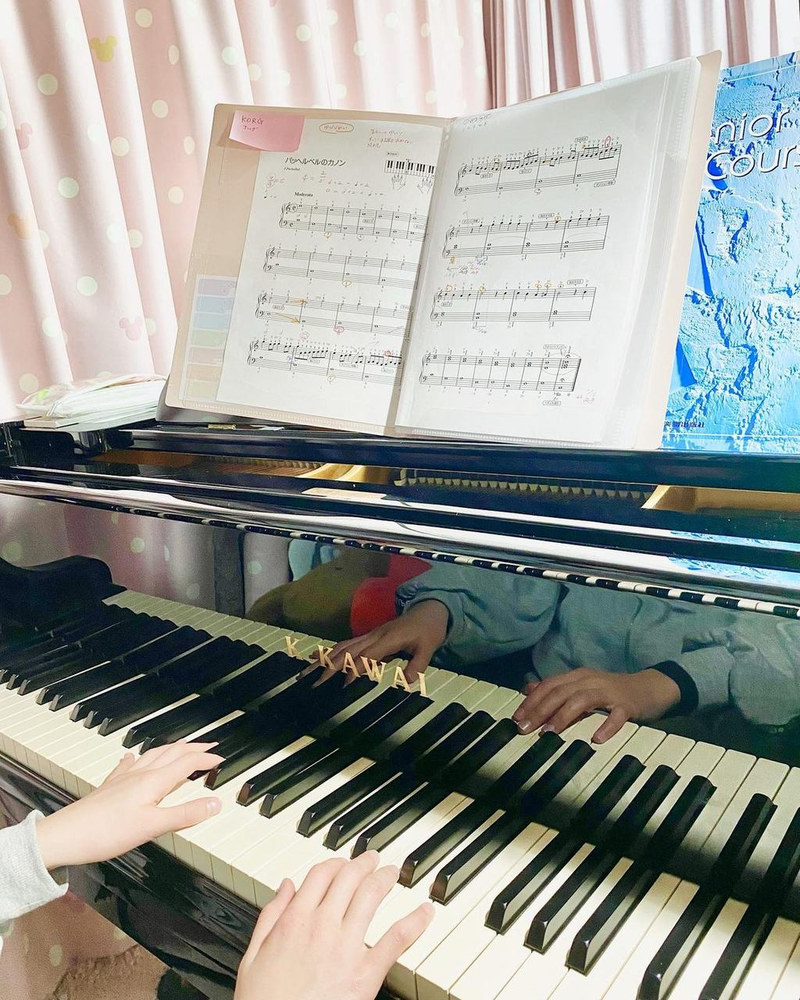
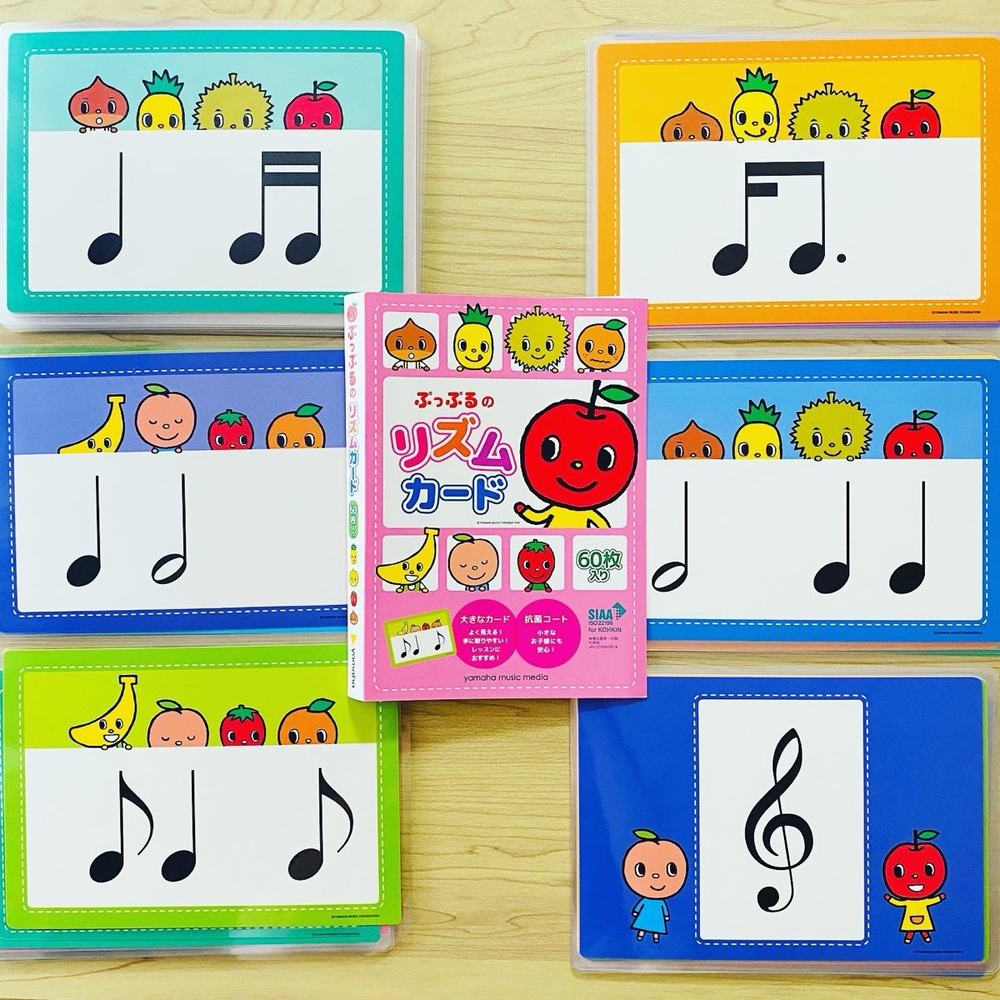
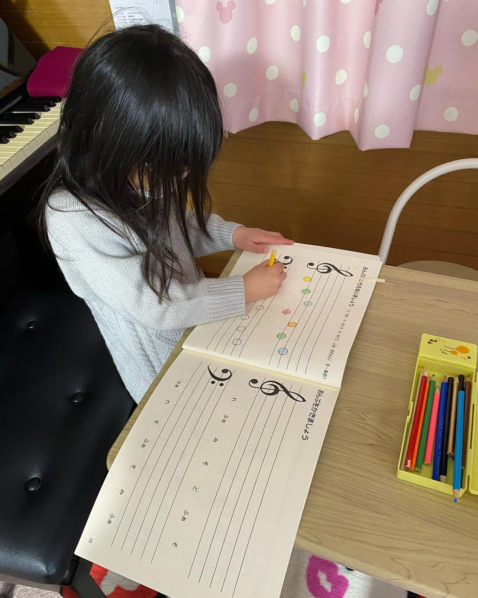
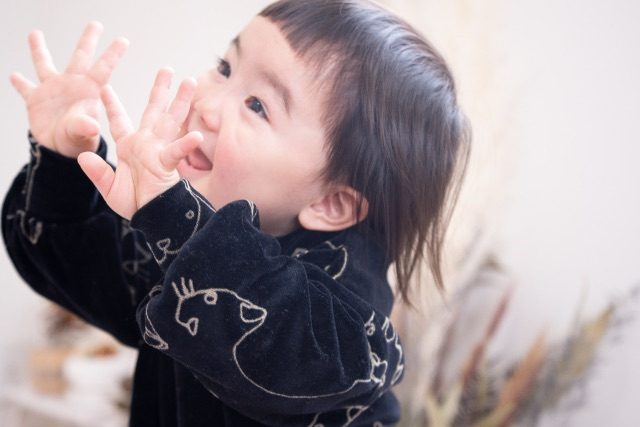
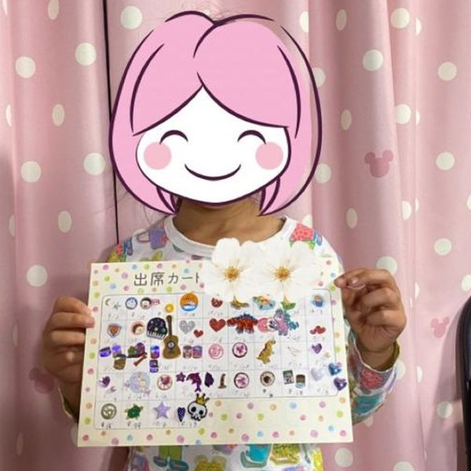
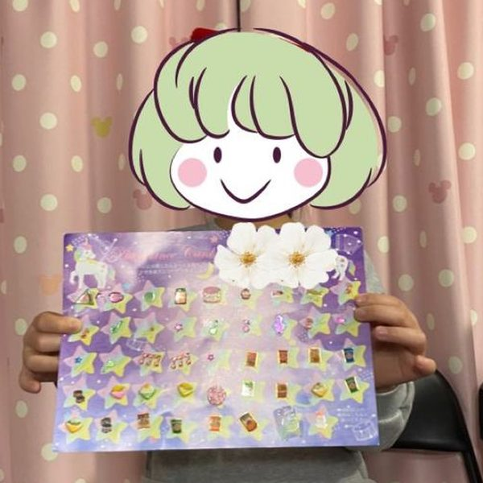

「できる！」が増える、
自信につながる。
自信に
すべての
じっと
ピアノを

ピアノを演奏するために 必要な4つのこと
当教室では、
①音楽・ピアノが好きな気持ち
いちばん
YOASOBIや
②ソルフェージュ能力を、リトミックで育てる
ソルフェージュ
この
③演奏技術
生徒さんの
練習の
④練習できること
毎日の
送迎が


ピアノが弾けるようになると
小さな
-
1
「できた！」が
増える 弾ける
フレーズが 少しずつ 増え、 シールや 賞状でがんばりが 目に 見えるように。 -
2
目標に
向けて 努力できる 「次はこれを弾きたい」と
自分で 目標を 決め、 コツコツ練習を 続けられる ように。 脳トレにもなります。 -
3
人前で
自信を もって 表現できる 発表会の
舞台を 経験して、 学校の 行事などでも 堂々と 自分を 表現できる ように。
性格に合わせて、
進み方を変える。
進み方を
生徒さんには
- 高い
壁に
燃えるタイプ - ほめられて
伸びるタイプ - 周りを
意識して
伸びるタイプ - 少しずつ
クリアするタイプ - マイペースに
取り組むタイプ

日々の努力を「見える化」
結果だけでなく、
合格シール
月の
ステップアップ賞状
教室独自の
グレード・コンクール
目標が


まずは体験レッスンへ
楽譜が
体験レッスン 30分 1,000円
体験